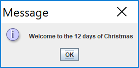
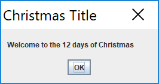
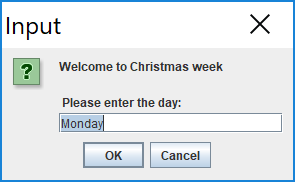
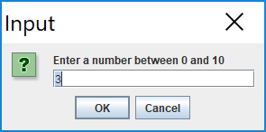
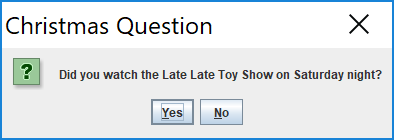

GUI · Swing · JOptionPane · dialog boxes · primitive arrays · array syntax
In this step, you will familiarise yourself with the JOptionPane class and particularly these methods:
Create a new Processing sketch in your workspace and call it lab05a_JOption.
We will use the same sketch for this entire step, so periodically save your work as you progress through it.
To use JOptionPane, we must import the Swing package:
import javax.swing.JOptionPane;Type in the following code in your sketch:
JOptionPane.showMessageDialog(null,
"Welcome to the 12 days of Christmas");Run your code.
You should get the following output:

The default option (above) has a small icon.
To have no such icon, you can add a 'PLAIN_MESSAGE' option. Add this code to the above code (you now should have two JOptionPanes in your code):
JOptionPane.showMessageDialog(null,
"Welcome to the 12 days of Christmas",
"Christmas Title",
JOptionPane.PLAIN_MESSAGE);Note that we also included a title for our message.
Run your code.
You should get the following output:

We will now look at user input and read in a String.
Add the following code:
String day = JOptionPane.showInputDialog(
"Welcome to Christmas week\n\n " + "Please enter the day: ",
"Monday");
println("Day is : " + day);Run your code.
This code should present you with this input dialog:

Also, the print statement will print out the day of the week you entered on the console.
We will now look at user input and read in a number.
As the input dialog reads from the user in String format, we will need to convert the String to a number if we want to do any mathematical operations on it:
int num = Integer.parseInt(
JOptionPane.showInputDialog("Enter a number between 0 and 10", "3" )
);Add this code...it simply performs a mathematical calculation on the number read in and displays the result on the console:
num++;
println("Your number incremented by 1 is : " + num);Run the code.
This code should present you with this input dialog:

Also, the print statement will print out the number you entered, incremented by 1.
Sometimes we will need a simple yes/no dialog.
Include the following code in your sketch:
int reply = JOptionPane.showConfirmDialog(null,
“Did you watch the Late Late Toy Show on Saturday night?",
"Christmas Question",
JOptionPane.YES_NO_OPTION);Add this code...it simply displays an int representation of your choice to the console:
println("You chose: " + reply);Run the code.
Your output should now look like:

And it should display an int representation of your choice to the console.
Save your work and close the project.
We will continue working on JOptionPane in the exercises.
In this step, we will introduce the use of arrays, in a similar manner as discussed in your lectures. Instead of reading in 10 numbers, we will just look at using 5.
Here you will use JOptionPane to read in 5 numbers, add them together and print their sum in the console window.
Create a new Processing sketch in your workspace and call it lab05a_Arrays_01.
Type the following code into your sketch:
import javax.swing.*;
int number = 0;
int sum = 0;
for (int i = 0; i<5; i++) {
number = Integer.parseInt(JOptionPane.showInputDialog(
"Please enter a number ", "3")
);
sum += number;
}
println("The sum of the values you typed in is : " + sum);Run your code.
The sum of the 5 numbers you have entered should be printed to the console e.g.
The sum of the values you typed in is : 15Save your work, but don't close the sketch.
In the above sketch, we read in 5 numbers and printed out a running total of the numbers. However, we didn't store the numbers we entered. Here, we will refactor our code (not using arrays) to save the 5 entered numbers.
Save your exsiting sketch as lab05a_Arrays_02
Refactor your code so that it declares 5 variables; these variables are then used to store each of the entered numbers. Then print out the sum of the numbers, along with the actual numbers entered. The code is here:
import javax.swing.*;
int n0, n1, n2, n3, n4;
int sum = 0;
n0 = Integer.parseInt(JOptionPane.showInputDialog("Please enter a number ", "3"));
sum += n0;
n1 = Integer.parseInt(JOptionPane.showInputDialog("Please enter a number ", "3"));
sum += n1;
n2 = Integer.parseInt(JOptionPane.showInputDialog("Please enter a number ", "3"));
sum += n2;
n3 = Integer.parseInt(JOptionPane.showInputDialog("Please enter a number ", "3"));
sum += n3;
n4 = Integer.parseInt(JOptionPane.showInputDialog("Please enter a number ", "3"));
sum += n4;
println("The sum of the values you typed in is : " + sum);
println("Number 1 is: " + n0);
println("Number 2 is: " + n1);
println("Number 3 is: " + n2);
println("Number 4 is: " + n3);
println("Number 5 is: " + n4);Run your code. The sum of the 5 numbers you have entered should be printed to the console, along with the numbers you just entered e.g.
The sum of the values you typed in is : 15
Number 1 is: 5
Number 2 is: 4
Number 3 is: 3
Number 4 is: 2
Number 5 is: 1Save your work, but don't close the sketch.
Here you will use JOptionPane to read in 5 numbers into an array, add them together and print their sum in the console window. In this code, we declare an integer array of size 5(allowing 5 values to be stored from index 0 to 4).
Save your exsiting sketch as lab05a_Arrays_03
Refactor your code so that it is the same as below:
import javax.swing.*;
int numbers[] = new int[5];
int sum = 0;
for (int i = 0; i < 5 ; i ++) {
numbers[i] = Integer.parseInt(JOptionPane.showInputDialog(
"Please enter a number ", "3"));
}
for (int i = 0; i < 5 ; i ++) { // now we sum the values and print each value
sum += numbers[i];
println("Number " + (i+1) + " is: " + numbers[i]);
}
println("The sum of the values you typed in is : " + sum);Run your code.
The sum of the 5 numbers you have entered should be printed to the console, along with the numbers you just entered e.g.
The sum of the values you typed in is : 15
Number 1 is: 5
Number 2 is: 4
Number 3 is: 3
Number 4 is: 2
Number 5 is: 1Notice that the output from this code, is the same as the output from lab05a_Arrays_02 above. However, the code here is much more maintainable (e.g. we could very easily refactor this to read in 100 numbers).
Save your work, but don't close the sketch.
A primitive array is of fixed size. So once you construct (using new) the array, you cannot change its size. However, you can read in this value (size of the array) before constructing the array. The next piece of code demonstrates this approach.
Save your exsiting sketch as lab05a_Arrays_04
Refactor your code so that it is the same as below (notice how we use now numData in the boolean expression of the for loop):
import javax.swing.*;
int numbers[];
int numData = Integer.parseInt(JOptionPane.showInputDialog("How many values do you wish to sum? ", "3"));
//now, use this value to make the array this size.
numbers = new int[numData];
int sum = 0;
for (int i = 0; i < numData ; i ++) {
numbers[i] = Integer.parseInt(JOptionPane.showInputDialog(
"Please enter a number ", "3"));
}
for (int i = 0; i < numData ; i ++) { // now we sum the values and print each value
sum += numbers[i];
println("Number " + (i+1) + " is: " + numbers[i]);
}
println("The sum of the values you typed in is : " + sum);Run your code and test it, in particular, by entering four values.
The sum of the numbers you have entered should be printed to the console, along with the numbers you just entered e.g.
Number 1 is: 9
Number 2 is: 8
Number 3 is: 4
Number 4 is: 3
The sum of the values you typed in is : 24Verify that the printed sum, is the correct tally of the values entered.
Save your work and close the project.
The exercises are based mainly on Arrays, with some use of JOptionPane.
For each exercise below, create a new sketch and save your work.
Write a program to declare and construct an int array (called numbers) of size 10.
Initialise the array by putting 20 in each of the elements of the array.
Print out the values to the console (each value should be printed to a new line) e.g.
Number 1 is: 20
Number 2 is: 20
Number 3 is: 20
Number 4 is: 20
Number 5 is: 20
Number 6 is: 20
Number 7 is: 20
Number 8 is: 20
Number 9 is: 20
Number 10 is: 20Write a program to declare and construct an int array (called numbers) of size 5.
Read in 5 values and store them in the array.
Print out the values to the console (one line at a time) in the reverse order to the order they were entered in. For example, if we entered 3, 4, 5, 6 and 7, the output should be:
Number 5 is: 7
Number 4 is: 6
Number 3 is: 5
Number 2 is: 4
Number 1 is: 3Write a program to declare and construct an int array (called numbers) with the size determined by the user.
Read in a value for each element in the array and store it.
Use a for loop to print out every second value stored in the array to the console. For example, if we choose to enter 8 numbers and then enter the following numbers: 5, 6, 7, 8, 9, 10, 11, 12, we should expect our output to be:
Number 1 is: 5
Number 3 is: 7
Number 5 is: 9
Number 7 is: 11Write a program to declare and construct an int array (called numbers) with the size determined by the user.
Read in a value for each element in the array and store it.
Print out only the even numbers stored in the array to the console (hint: use the % operator). For example, if we choose to enter 6 numbers and then enter the following numbers: 6, 7, 8, 10, 11, 12, we should expect our output to be:
Number 1 is: 6
Number 3 is: 8
Number 4 is: 10
Number 6 is: 12The challenges are on JOptionPane today.
JOptionPane.showMessageDialog(null,
"Welcome to the 12 days of Christmas",
"Christmas Title",
JOptionPane.PLAIN_MESSAGE);The above code produces this message dialog, with a message type of PLAIN_MESSAGE:
Visit the Java API for JOptionPane: https://docs.oracle.com/javase/7/docs/api/javax/swing/JOptionPane.html and look for the messageType description, i.e. :
messageType
Defines the style of the message. The Look and Feel manager may lay out the dialog differently depending on this value, and will often provide a default icon. The possible values are:
ERROR_MESSAGE
INFORMATION_MESSAGE
WARNING_MESSAGE
QUESTION_MESSAGE
PLAIN_MESSAGECreate a new sketch and experiment with these message type options and note the changes in the output.
int reply = JOptionPane.showConfirmDialog(null,
“Did you watch the Late Late Toy Show on Saturday night?",
"Christmas Question",
JOptionPane.YES_NO_OPTION);The above code produces this confirm dialog, with a yes/no button option:
Return to the Java API for JOptionPane: https://docs.oracle.com/javase/7/docs/api/javax/swing/JOptionPane.html and look for the optionType description, i.e. :
optionType
Defines the set of option buttons that appear at the bottom of the dialog box:
DEFAULT_OPTION
YES_NO_OPTION
YES_NO_CANCEL_OPTION
OK_CANCEL_OPTIONCreate a new sketch and experiment with these option types and note the changes in the output.
The solutions for this lab can be found here.
If you require unzipping software, 7zip is a good choice: http://www.7-zip.org/ (or Keka for Mac http://www.kekaosx.com/en/)
After unzipping the solutions, it might be a good idea to copy the folders to your sketchbook folder. From Processing, you could then use File, followed by Sketchbook to easily open them.